The Weather Witness / Three Turns
A chance figure / A Line Through the Gesture ? A chance vessel / The Bowl Keeps Its Red ? The bowl / a lower light and faint echo ?
The blown form holds its place. Inside, the weather and the traces slide behind the smoke-blue wall as the vessel turns: wave, horse, one warm point.
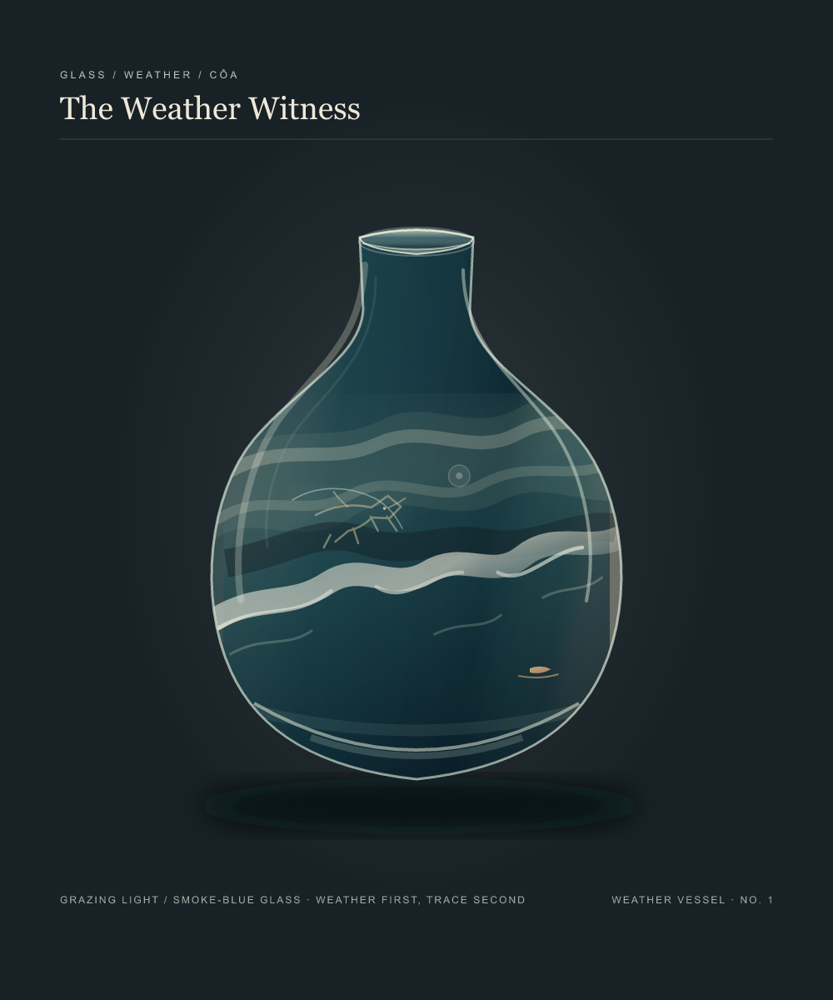
The Weather Witness / Grazing Light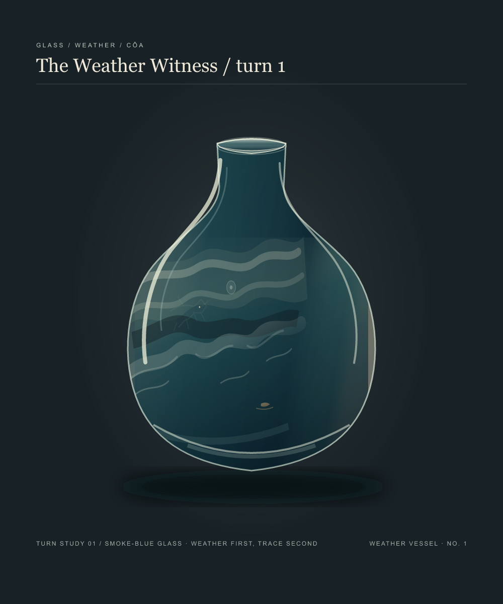
The wave turns away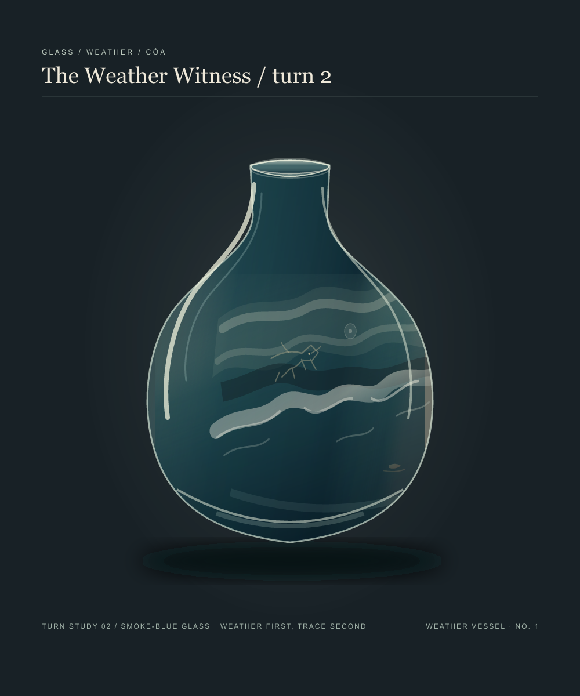
Light finds the horse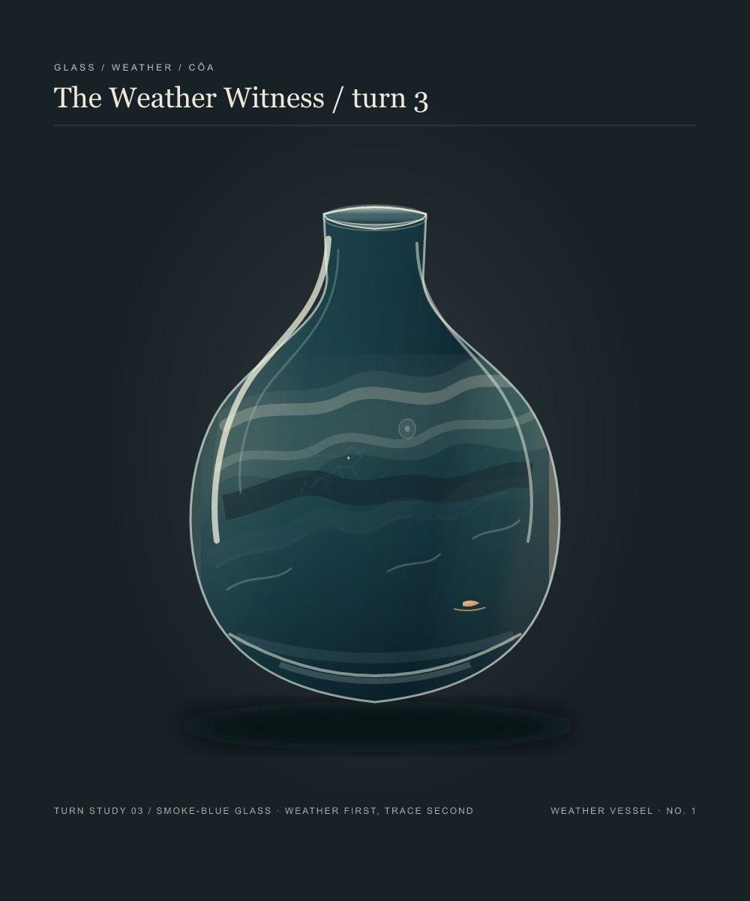
One mark leftLight Moves, Image Holds
The sideways movement nearly stops. A reflected streak travels from the left wall, across the faint horse, and around the far side.
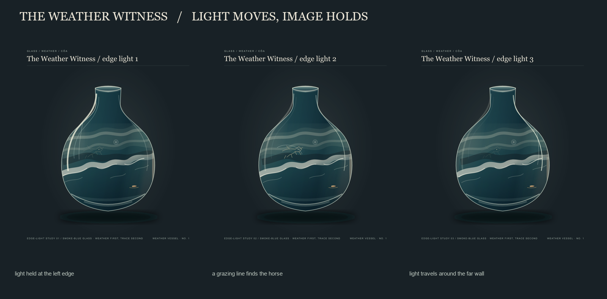
Left edge · Light on the horse · Far edge
Crosswind
A second weather crosses the vessel: cloud leans one way, the wave cuts back toward the buoy.
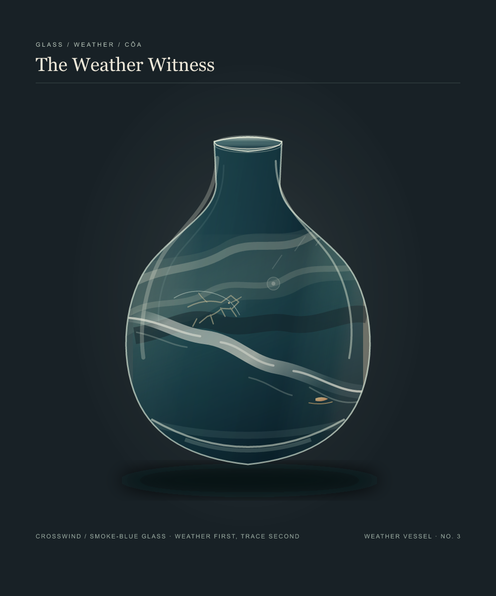
The Weather Witness / CrosswindCountermark
The warm point moves to the far side of the vessel. The breaking wave keeps its direction but no longer arrives at it.
The Weather Witness / CountermarkCarried Mark
The small orange buoy sits inside the breaking line, held in the weather rather than placed beyond it.
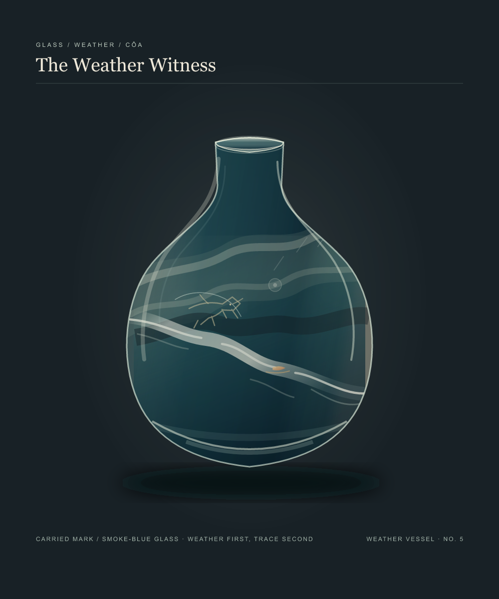
The Weather Witness / Carried MarkVeiled Mark
The buoy moves just above the wave. The breaking line passes over its lower half, so the warm point flickers between carried and obscured.
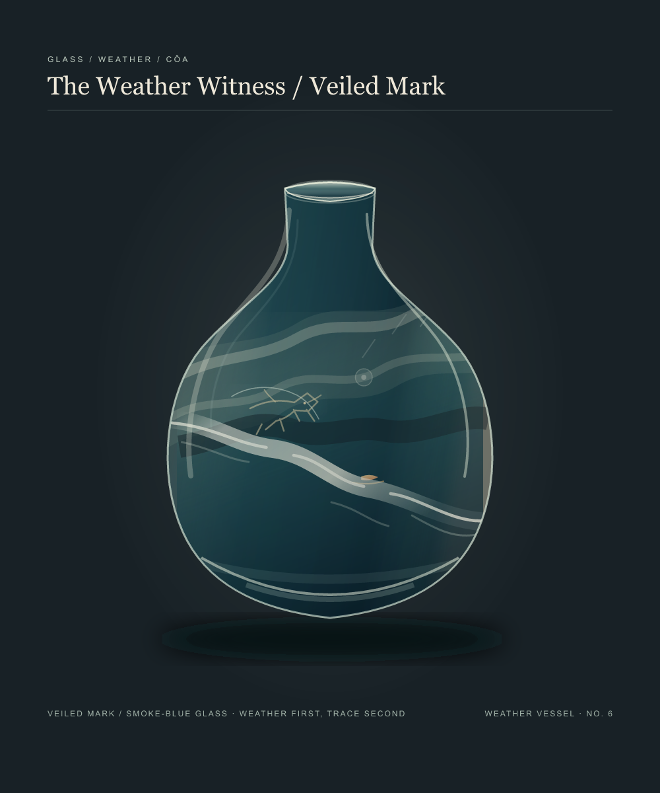
The Weather Witness / Veiled Mark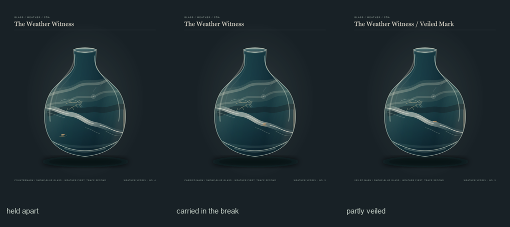
Wave Return
The vessel holds still while its broken wave passes across the buoy. After the foam crosses, one brief amber reflection returns.
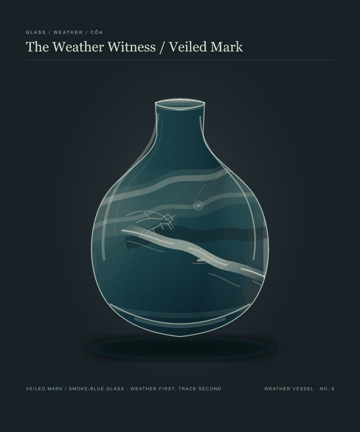
The Weather Witness / Wave Return · loop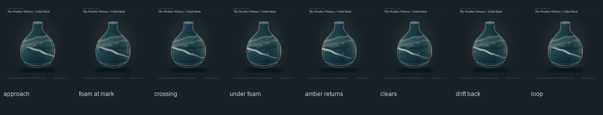
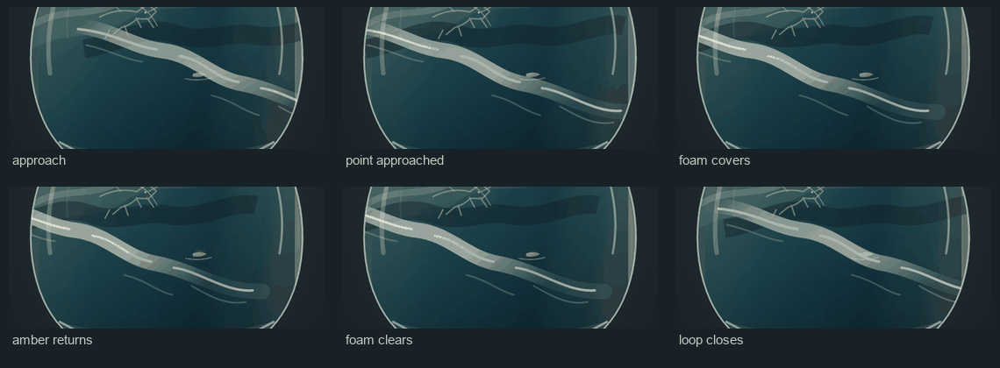
Long Dark
See this loop alone
A quieter return holds more dark after the foam clears. The brief light sits on the buoy's upper edge, so it reads as a glint on the same point.
 The Weather Witness / Long Dark
The Weather Witness / Long Dark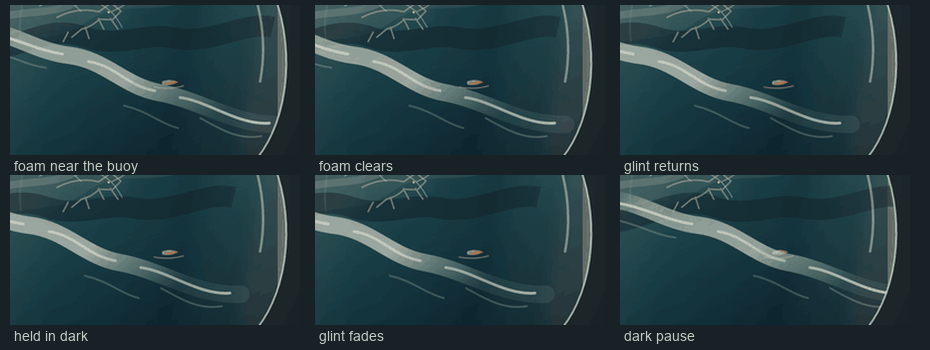
A still question / the warm mark, alone or reflected
Weather, Heard
A short sound study: a gust passes from left to right, water swells twice, and one glass-bright note marks the moment the light reaches the trace.
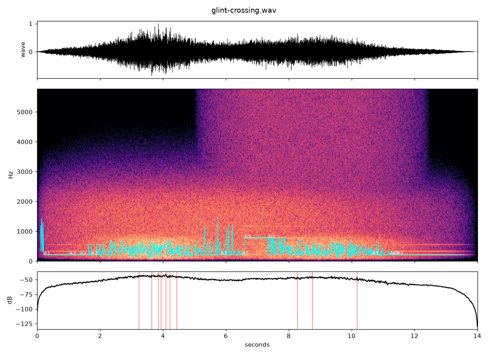
Weather, Heard / 14 secondsA Glint Crosses the Vessel
The picture inside barely moves. Reflected light travels along the wall, briefly finding the horse.
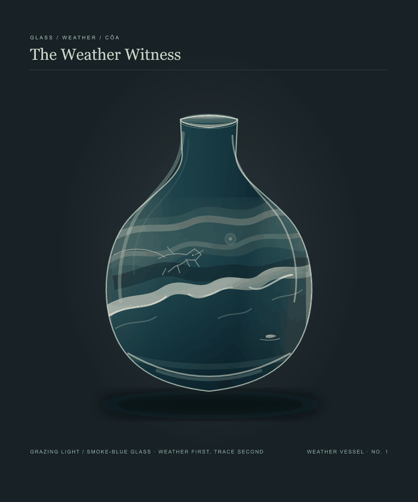
Glint crossing / loop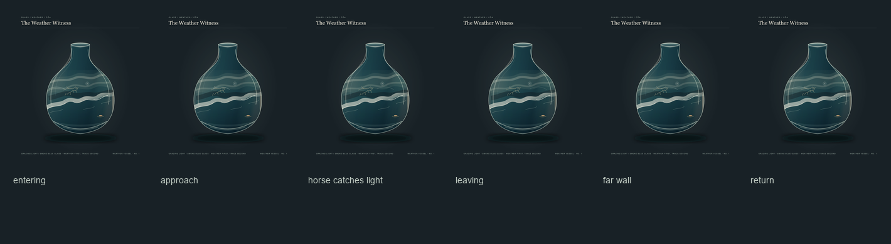
Another thread / The Horizon Cannot Row →
A chance arrival / The Pause Before Sound →
A chance object / A Narrow Garden →
An imagined meeting / The Borrowed Edge →
A chance sound / Three Returns →
A chance passage / The Colors Cross
A pairing / One Current, Two Marks
A handoff / The Unnumbered Patch
A work made of waiting / The Days Between Hands
A chance object / A Line of Knots
A chance object / Inside, Still White
A chance weather / Lafox at 98%
A chance voice / No Room